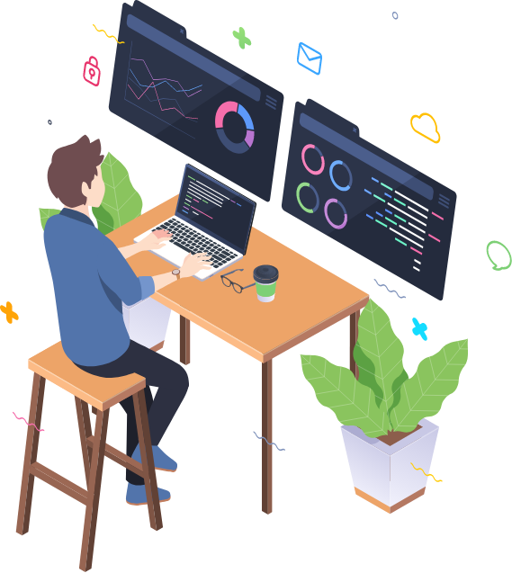

SRE · Développeur · Associé Waays
Maxime Badin
Tombé dans l'informatique petit, je passe mes journées entre Kubernetes, de l'observabilité et du backend. Hors ligne, je swap le terminal contre un masque de plongée, un vélo ou des haltères.

À propos de moi
Maxime Badin
Associé @ Waays · Lyon, France
Au cours des dernières années, j'ai travaillé sur de nombreux projets personnels comme professionnels. Je suis passionné par la façon d'utiliser les technologies de pointe pour résoudre un vaste éventail de problèmes, qu'ils soient centrés sur l'entreprise ou liés à la société.
L'informatique est une passion, j'adore apprendre et découvrir de nouvelles technologies. En ce moment, je bosse sur Kubernetes, Golang et Next.js. Je prépare aussi quelque chose en coulisses. Ça arrive.
Mes projets
My-Places
Le réseau social de la photographie et des lieux incroyables
Dash-X
Dashboard pour entrepreneur
Cluster K8S
Mise en place d'un cluster Kubernetes de production

Workout Tracker
Tracking des entraînements musculation
Expériences
Waays
Associé · SRE temps partagé
SRE temps partagé (40 clients) · Kubernetes (plateforme & client via Kers) · Performance & monitoring (K6, Prometheus, Tempo, Loki, Grafana) · Opensource (Debian, K8s, OpenTofu…)
Sully Group
Développeur / Devops
Développement Symfony · Outils développeur & intégration Docker · Devops (Gitlab-CI, Jenkins, Asqatasun)
Lokris
Alternance · SRE & Développeur
Infrastructure (VMware, Linux, Python/Bash, Teleport) · IAC (Terraform, Ansible) · Symfony (CRM, ERP, SaaS) · React Native · Monitoring (Centreon, Influx, Grafana, Loki)
Projets personnels
Nombreux projets visibles dans la section Projets.
Études
MS2D — BAC +5
ORT Lyon · Mention Très Bien
Manager des solutions digitales et data
Bachelor CSI — BAC +3
ORT Lyon · Mention Très Bien
Concepteur de Systèmes d'Information
BTS SN-IR — BAC +2
ORT Lyon
Systèmes Numériques, option Informatique et Réseaux
BAC PRO SN
Mention Très Bien
BAC Professionnel Systèmes Numériques
Compétences
Depuis que j'ai commencé la programmation, j'adore apprendre et découvrir de nouvelles technologies. Mes expériences en entreprise et à l'école m'ont permis de développer un large panel de compétences.
Infrastructure & Cloud
DevOps & IaC
Monitoring & Observabilité
Développement
Contact
Une idée de projet, une opportunité, ou juste envie d'échanger ? Envoyez-moi un message, je vous répondrai rapidement.